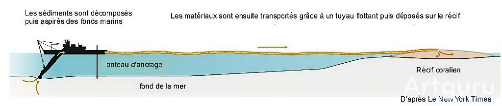
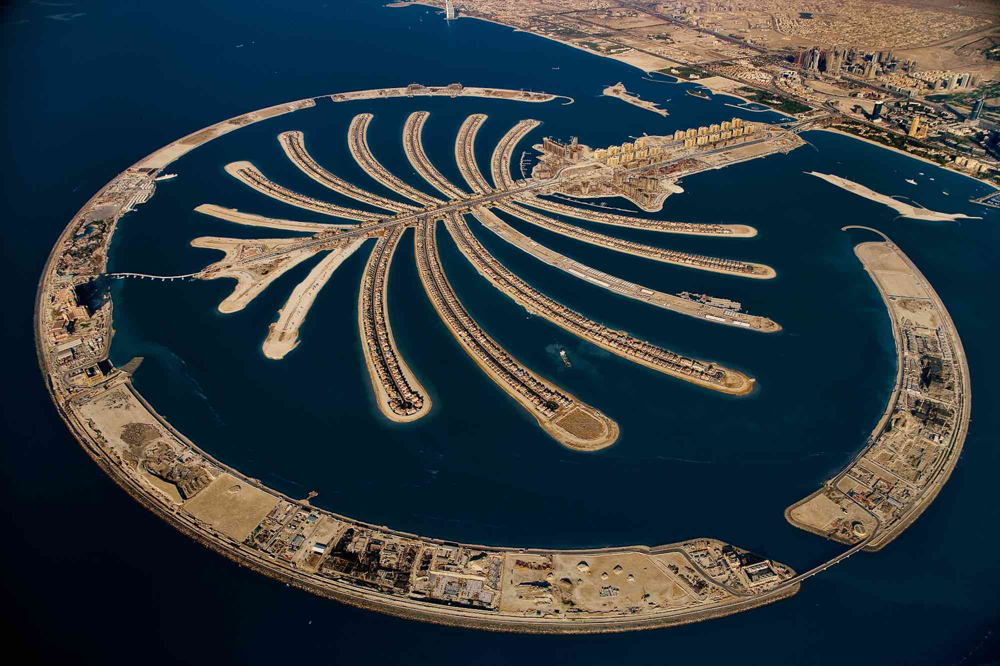

1. Introduction Générale & Géographie
La mer de Chine méridionale est une zone maritime semi-fermée située en Asie du Sud-Est. Elle est bordée par la Chine, le Vietnam, les Philippines, la Malaisie, Brunei et Taïwan.
Pourquoi cette zone est-elle critique ?
Cette mer cristallise des enjeux géopolitiques majeurs pour plusieurs raisons :
- Commerce : Le commerce mondial y est très développé (environ 1/3 du flux mondial).
- Ressources : Ses fonds recèlent d'importantes ressources en pétrole et en gaz.
- Conflits : Les archipels (Spratleys et Paracels) sont revendiqués par 6 entités riveraines.
- Biodiversité : Une "mine d'or biologique" abritant d'immenses récifs coralliens.
Focus sur les Îles Spratleys
Les îles Spratleys regroupent environ 100 petits îlots et récifs. Elles sont au cœur de la route maritime mais aussi au-dessus de réserves potentielles d'hydrocarbures et de zones de pêche vitales.
C'est ici que les tensions sont les plus vives : pour affirmer sa souveraineté, la Chine a artificiellement créé et militarisé des îles en remblayant des récifs (poldérisation), posant de graves problèmes environnementaux et juridiques.
2. Contexte Géopolitique : Enjeux & Militarisation
Le contexte est marqué par la superposition de revendications territoriales, des enjeux économiques mondiaux et une intense militarisation.
A. Chiffres Clés du Carrefour Mondial
COMMERCE
Cliquez pour voir
3 400 Mds $
Environ 21% du commerce maritime mondial, soit près de 3,4 billions de dollars de marchandises, transite chaque année par cette mer.
ÉNERGIE
Corridor Vital
37% des exportations mondiales de pétrole maritime et 34% du commerce mondial de GNL (Gaz Naturel Liquéfié) y passent.
TRAFIC
40% du Trafic
La zone abrite 29 grands ports et voit passer 40% du trafic mondial de navires.
RESSOURCES
PÊCHE & RIVALITÉS
Cet espace est aussi riche en ressources : hydrocarbures sous-marins, zones de pêche parmi les plus productives d’Asie et donc essentielles à la sécurité alimentaire des États riverains.
B. La Stratégie du "Fait Accompli"
La Chine revendique près de 90% de la zone via la "Ligne en neuf traits" (1947). Son origine remonte au Comité d’inspection des cartes de la terre et de l’eau du gouvernement du Guomindang, formé en 1933 (Franckx et Benatar, 2012). Elle a été rendue publique pour la première fois en 1935 ou en 1936 (Zou, 1999 ; Wang, 2015) mais la plupart des chercheurs mentionnent une première apparition officielle entre 1946 et 1948, dans un atlas créé pour les autorités nationalistes , avant d’être reproduite par le gouvernement communiste de la RPC en 1949 (Gau, 2012).
🗺️ L'Artificialisation et la Militarisation (2013-2017)
Depuis 2013, Pékin applique la stratégie du "fait accompli".
- Ampleur : Plus de 1 300 hectares de terres artificielles créés en 4 ans.
- Bases clés : Transformation de Fiery Cross Reef (274 ha), Mischief Reef (558 ha) et Subi Reef.
- Équipement : Pistes d'atterrissage de 3 000 mètres, radars avancés, missiles sol-air et ports en eau profonde.
3. Impacts Environnementaux : Des dommages irréparables
La poldérisation massive (agrandir un îlot existant ou à renflouer un récif partiellement recouvert par la mer) dans le "Triangle de Corail" a causé des dommages irréversibles.
🏗️ 1. Destruction Physique : La "Grande Muraille de Sable"
La Méthode d'Artificialisation : La Chine a lancé des « gigantesques travaux de dragage et de remblaiement » pour transformer des récifs immergés en îles.
 DraguageCette stratégie vise à ériger une véritable « grande muraille de sable ».
🧪 2. Explosion de la Turbidité
Contexte scientifique : Cette étude publiée dans Nature (2019) quantifie les dégâts collatéraux au-delà de la zone de construction.
- Mécanisme : Le dragage crée des « panaches sédimentaires » (nuages de sable) qui se dispersent dans l'océan.
- Chiffres clés :
- Explosion de la turbidité : +350% de particules en suspension (rétrodiffusion).
- Surface impactée : Les nuages de sédiments couvrent parfois plus de 250 km² autour d'un seul récif.
- Total impacté : Environ 1 200 km² touchés au total.
- Conséquence : Les sédiments retombent et ensevelissent (smothering) les habitats benthiques voisins, les tuant par asphyxie.
![Évolution de la formation d'îles et des changements océaniques au récif Mischief. Des images haute résolution de l'Asia Maritime Transparency Initiative (ASTI) du Center for Strategic and International Studies¹⁴ montrent : (a) le récif Mischief intact en 2013 (Image © 2013 DigitalGlobe, Inc.) ; (b) une importante activité de dragage visible en 2015 (Image © 2015 DigitalGlobe, Inc.) ; (c) un développement terrestre visible en 2016 (Image © 2016 DigitalGlobe, Inc.) ; et (d) notre analyse des images de couleur de l'océan du MODIS-Aqua (MODerate-resolution Imaging Spectroradiometer) indique un important panache de rétrodiffusion coïncidant avec une période de forte activité de dragage, mise en évidence en (b). L'encart présente (b) à l'échelle de l'image de couleur de l'océan. [NASA Goddard Space Flight Center, Ocean Ecology Laboratory, Ocean Biology Processing Group ; (2015) : MODIS Aqua Ocean Color Data, NASA OB.DAAC.] https://oceandata.sci.gsfc.nasa.gov/cgi/getfile/http_manifest.txt?h=ocdist103&p=/data2/c080a010e2fe8158. Consulté le 27/04/2017].](image7.jpg)
🧬 3. Dégradation de la qualité de l'eau
Cette étude (MDPI) analyse le lien entre îles artificielles et "marées vertes" (algues toxiques).
- Mécanisme : Les structures artificielles agissent comme des barrières physiques qui "freinent" les courants de marée. L'eau stagne.
- Résultats :
- Accumulation de polluants due à la stagnation.
- Concentration en Nitrates (NO3-) augmentée jusqu'à 40%.
- Conséquence : Eutrophisation massive (excès de nutriments) étouffant l'écosystème côtier.
🏖️ 4. Modification de l'hydrodynamisme & Érosion
L'étude technique sur la baie de Riyue démontre qu'une île artificielle crée une "zone d'ombre" derrière elle.
- Effet : Envasement derrière l'île, mais érosion violente sur les plages adjacentes due à l'accélération des courants latéraux.
- Conclusion : L'équilibre naturel est rompu. Il faut une "maintenance cyclique" perpétuelle pour réparer les dégâts que l'île elle-même cause.
🎣 5. Conséquence indirecte majeure
À ces impacts s’ajoute une conséquence indirecte majeure. On va retrouver une pêche illégale massive et non réglementée, utilisant des méthodes destructrices comme la dynamite ou le cyanure et ciblant des espèces menacées.
L’ensemble de ces pressions contribue à une dégradation durable de l’écosystème récifal et à un effondrement des stocks halieutiques régionaux.
4. Le Cadre Juridique (CNUDM / UNCLOS)
L'analyse se fait au prisme de la Convention de Montego Bay, ratifiée par la Chine en 1996.
A. Statut des Îles et Arbitrage de 2016
Ce que dit la Convention (CNUDM - Art 60 & 80)
1.Une île artificielle n'a pas le statut d'île naturelle.
2.Elle ne génère ni Mer Territoriale, ni Zone Économique Exclusive (ZEE).
3.Elle n'a droit qu'à une zone de sécurité de 500 mètres.
Le Verdict de la Cour Permanente d'Arbirage (CPA) de La Haye (2016)
Dans l'affaire Philippines vs Chine :
- La "Ligne en neuf traits" est sans fondement légal.
- Les récifs (Mischief, Subi) sont des "hauts-fonds découvrants", ne générant pas de ZEE.
- Article 192 : « Les États ont l'obligation de protéger et de préserver le milieu marin. » C'est sur cette base que la CPA a condamné la Chine. La Chine a violé son obligation de protéger le milieu marin.
Note : La Chine a pratiqué la "politique de la chaise vide" en boycottant le procès.
Le Paradoxe du Boycott
La Chine a choisi de boycotter le procès. En refusant de siéger, elle a automatiquement renoncé à son droit de choisir ses arbitres. Ils ont donc été nommés par une autorité neutre, une procédure standard que Pékin conteste aujourd'hui alors qu'elle en est la seule responsable.
En droit pur, la Chine est donc tenue de cesser ces activités illicites et de réparer le préjudice environnemental. Cependant, nous touchons ici à la limite structurelle du droit international : en l'absence de force de police supranationale capable de contraindre une grande puissance, cette sentence demeure juridiquement contraignante mais, pour l'heure, dépourvue de force exécutoire sur le terrain.
B. L'abus des Lignes de Bases
1. L'approche du détournement : En général, conformément à la Convention de Montego Bay (CNUDM), un État est tenu d'appliquer le principe de « ligne de base normale » lorsqu'il possède des îlots dispersés tels que ceux des Spratleys. En d'autres termes, cela implique de délimiter une zone de souveraineté de 12 milles pour chaque rocher, l'un après l'autre. L'espace entre ces cercles est considéré comme la haute mer libre de circulation.
L'abus consiste à utiliser des « lignes de base droites ». Supposons que l'État choisisse de connecter par des lignes droites tous les points les plus périphériques de l'archipel. Il génère donc une vaste zone géométrique, un polygone fermé, qui englobe toutes les îles.
2. L'infraction technique : l'usurpation du statut d'État-archipel. L'autorisation de définir cette étendue globale est une exception attribuée exclusivement aux États-archipels, c'est-à-dire des pays constitués uniquement d'îles, tels que l'Indonésie ou les Philippines.
Le délit consiste à ce qu'un État continental, tel que la Chine, revendique ce privilège pour un archipel éloigné (« offshore archipelago »). Sur le plan juridique, il est impossible pour un État continental de tracer des lignes de base droites autour d'îles qui sont éloignées de sa masse terrestre principale. Le Tribunal arbitral de 2016 a été très clair : on ne peut pas traiter les Spratleys comme une entité unique et indivisible.
C. La Bataille Navale : Art 17 vs Art 87
⚔️ Passage Inoffensif vs Liberté de Navigation (Le cœur du conflit)
Le conflit repose sur une interprétation divergente du droit maritime. C'est une partie de "Lawfare" (guerre par le droit).
Vision Chinoise (Art 17 abusif)
"Ceci est notre territoire national."
Pékin considère ces eaux comme "territoriales" et impose le régime du Passage Inoffensif. Selon eux, les navires étrangers doivent :
- ⛔ Demander la permission avant d'entrer (illégal selon l'UNCLOS).
- ⛔ Naviguer en ligne droite, sans s'arrêter.
- ⛔ Garder les radars de tir éteints.
- ⛔ Ne faire décoller aucun hélicoptère ou drone.
Droit International (Art 87)
"Ceci est l'espace international."
La CPA a jugé qu'il n'y a pas d'eaux territoriales ici. Les USA répondent par des FONOPs (Opérations de Liberté de Navigation) :
- ✅ Refus de prévenir (pour ne pas valider la souveraineté).
- ✅ Réalisation de manœuvres militaires (zigzag, "Man overboard").
- ✅ Activation des radars de conduite de tir.
- ✅ Lancement d'aéronefs pour prouver la liberté totale.
Si un navire américain se comportait "sagement" (radars éteints, navigation droite) en passant près d'un îlot chinois, il respecterait les règles du Passage Inoffensif. Juridiquement, cela reviendrait à reconnaître implicitement que la Chine est souveraine chez elle. C'est pour cela que les Occidentaux sont obligés de se montrer "agressifs" ou de faire des manœuvres : c'est la seule façon de marquer physiquement le droit international.
🔥 Zoom sur l'incident du 30 Septembre 2018
C'est l'illustration la plus critique de cette tension. Alors que le destroyer américain USS Decatur naviguait près du récif de Gaven, il a été intercepté par le destroyer chinois Lanzhou (Type 052C).
- L'action : Le navire chinois a dépassé l'américain avant de virer brutalement pour lui couper la route.
- La distance : Les deux navires de guerre se sont frôlés à seulement 41 mètres (45 yards).
- La conséquence : L'USS Decatur a dû engager une manœuvre d'urgence ("barre toute") pour éviter la collision.
Source : Rapport officiel de l'US Pacific Fleet (2018) relayé par CNN et l'AFP.
5. Gouvernance : L'Impasse Systémique
L'océan est un espace de coordination sans autorité centrale mondiale.
1. Niveau International : Crise de Légitimité
Acteur : Cour Permanente d'Arbitrage (CPA).
La sentence de 2016 est juridiquement parfaite mais politiquement impuissante (pas de force exécutoire). Le système onusien (ONU) repose sur le consentement des États. Or, ici, la Chine retire son consentement. Ce n'est plus seulement une question de droit, c'est une crise de légitimité
En rejetant la décision, la Chine pratique le "Lawfare" (guerre juridique) : utiliser ou ignorer le droit comme une arme stratégique.
2. Niveau Régional : La Paralysie
Acteur : ASEAN (Asie du Sud-Est).
Tentative de créer un "Code de conduite". Échec car la Chine refuse le multilatéralisme et impose des négociations bilatérales (pays par pays) où elle est en position de force. Résultat : aucune surveillance environnementale régionale efficace ne peut être mise en place
3. Niveau National : L'Unilatéralisme
Acteur : République Populaire de Chine.
Elle remplace la règle de droit commune par le fait accompli national. Elle agit comme si elle possédait le territoire (souveraineté totale) là où elle n'a, au mieux, que des "droits souverains" limités (ZEE).
6. Conclusion Générale
Une Impasse Globale
1. Un désastre écologique : Sur le plan environnemental, la politique chinoise de poldérisation à grande échelle a provoqué une catastrophe écologique de grande ampleur. En procédant au bétonnage de récifs coralliens essentiels à la biodiversité, Pékin a enfreint ses engagements de protection de l'environnement marin (article 192 de la CNUDM).
2. Sur le plan juridique, l'analyse démontre que le droit international est clair, mais bafoué. La sentence arbitrale de 2016 a fermement établi que les îles artificielles ne génèrent aucune souveraineté et que la « ligne en neuf traits » est sans fondement légal. Pourtant, par l'abus des lignes de base droites et l'imposition illégale de règles de passage inoffensif (article 17) là où devrait régner la liberté de navigation (article 87), Pékin tente de réécrire le droit de la mer à son avantage.
3. En termes de gouvernance, nous faisons face à une impasse structurelle. L'absence de « police supranationale » et la faiblesse des mécanismes régionaux comme l'ASEAN laissent le champ libre à l'unilatéralisme. La Chine, en boycottant l'arbitrage et en pratiquant le Lawfare, prouve que la légitimité juridique ne suffit pas toujours face à la réalité de la puissance physique.
Synthèse des Enjeux
Géopolitique
Le « Fait Accompli » : Imposer une présence militaire irréversible sur le terrain pour contourner le droit international.
Environnement
Le sacrifice écologique : La destruction définitive des récifs coralliens au profit de la construction de bases militaires.
Juridique
La stratégie du refus : Bien que condamnée par l'arbitrage de 2016, la Chine persiste à ignorer les règles communes.
Gouvernance
L'impasse : Il existe des lois mondiales, mais aucune « police internationale » capable de forcer une grande puissance à les respecter.
🌍 Ouverture : Les iles artificielles à Dubaï
Pour élargir notre réflexion sur l'artificialisation des mers, il est pertinent d'observer le cas emblématique des Émirats Arabes Unis. À travers des projets pharaoniques comme Palm Jumeirah ou The World, Dubaï a repoussé les limites de l'ingénierie maritime, non pas pour la guerre, mais pour préparer l'économie de l'après-pétrole.
 Exemple : Vue aérienne d'une des iles artificielles à Dubaï : Palm JumeirahUne prouesse technique et économique
-
🏗️
L'Ingénierie du Gigantisme :
Dubaï a utilisé la technique du "remblaiement hydraulique" (vibro-compactage) pour déplacer des centaines de millions de mètres cubes de sable. L'objectif : augmenter artificiellement la longueur du littoral pour y construire des hôtels et des résidences de luxe.
-
💰
Le "Soft Power" Touristique :
Ces îles visent la rentabilité foncière et le rayonnement international. Elles sont situées dans les eaux territoriales incontestées des Émirats et sont ouvertes au commerce mondial.
-
⚠️
Le Coût Environnemental :
Si ces îles ne génèrent aucun contentieux juridique comparable au cas chinois, elles présentent exactement les mêmes dangers pour l'environnement. L'artificialisation a entraîné une modification des courants marins, l'érosion des plages voisines et l'enfouissement définitif des écosystèmes marins sous le sable.
« Le cas de Dubaï nous rappelle que la maîtrise technologique des océans est une lame à double tranchant : elle peut générer une immense richesse économique, tout en posant, là aussi, la question de la durabilité des écosystèmes marins face à l'intervention humaine. »
Asia Maritime Transparency Initiative. (2018). Island tracker: China's island building in the Spratleys. Center for Strategic and International Studies (CSIS). https://amti.csis.org/island-tracker/
Assemblée nationale. (2019). Rapport d'information déposé par la commission des affaires étrangères en conclusion des travaux d’une mission d’information constituée le 17 octobre 2018 sur les enjeux géopolitiques en mer de Chine méridionale (Rapport n° 1868). https://www.assemblee-nationale.fr/dyn/opendata/RINFANR5L15B1868.html
Consortium News. (2020, 15 juillet). US escalates tension in South China Sea. Consortium News.
Convention sur la diversité biologique. (1992, 5 juin). Texte de la Convention. Secrétariat de la Convention sur la diversité biologique.
Cour permanente d'arbitrage. (2016, 12 juillet). Arbitrage concernant la mer de Chine méridionale (République des Philippines c. République populaire de Chine) (Affaire n° 2013-19). https://pca-cpa.org/
Fan, J., Kuang, C., Liu, X., Gu, J., & Zhang, Y. (2023). Impact of artificial islands and reefs on water quality in Jinmeng Bay, China. Water, 15(5), 959. https://doi.org/10.3390/w15050959
Franckx, E. et Benatar, M. (2012). « Dots and lines in the South China Sea : insights from the law of map evidence », Asian Journal of International Law, 2(1), 89-118.
Gau, M. (2012). « The U-shaped line and a categorization of the ocean disputes in the South China Sea », Ocean Development & International Law, 43(1), 57-69.
IHS Jane's. (2015, 20 septembre). Satellite imagery analysis: Fiery Cross Reef, South China Sea [Images satellites].
Lagneau, L. (2017, 15 décembre). Mer de Chine méridionale : Pékin poursuit la militarisation de ses îlots artificiels. Zone Militaire (Opex360). http://www.opex360.com/
Marine & Océans. (2020, 14 juillet). Mer de Chine méridionale : Washington rejette les prétentions de Pékin. Marine & Océans.
McManus, J. W. (2017). Offshore coral reef damage, overfishing, and paths to peace in the South China Sea. The International Journal of Marine and Coastal Law, 32(2), 199–237.
Nations Unies. (1982). Convention des Nations Unies sur le droit de la mer. https://www.un.org/depts/los/convention_agreements/texts/unclos/unclos_f.pdf
Réseau Canopé. (2020). La mer de Chine méridionale : un espace convoité. Dans Les espaces maritimes : approches géostratégiques. https://www.reseau-canope.fr
Smith, G., Cornillon, P., Rudnickas, D., & Mouw, C. B. (2019). Optical remote sensing of the environment in the South China Sea. Scientific Reports, 9, Article 5295. https://www.nature.com/articles/s41598-019-41659-3
Wang, X., Kuang, C., & Gu, J. (2025). Experimental study on beach restoration under the influence of artificial islands. Water, 17(7), 972. https://www.mdpi.com/2073-4441/17/7/972 (Note : Le lien de votre dossier renvoie au volume 17 de la revue Water, correspondant à l'année 2025).
Wang, Z. (2015). « Chinese Discourse on the ‘Nine-Dashed Line’ », Asian Survey, 55(3), 502–524.
Zou, K. (1999). « The Chinese Traditional Maritime Boundary Line in the South China Sea and Its Legal Consequences for the Resolution of the Dispute over the Spratly Islands », The International Journal of Marine and Coastal Law, 14(1), 27-55.